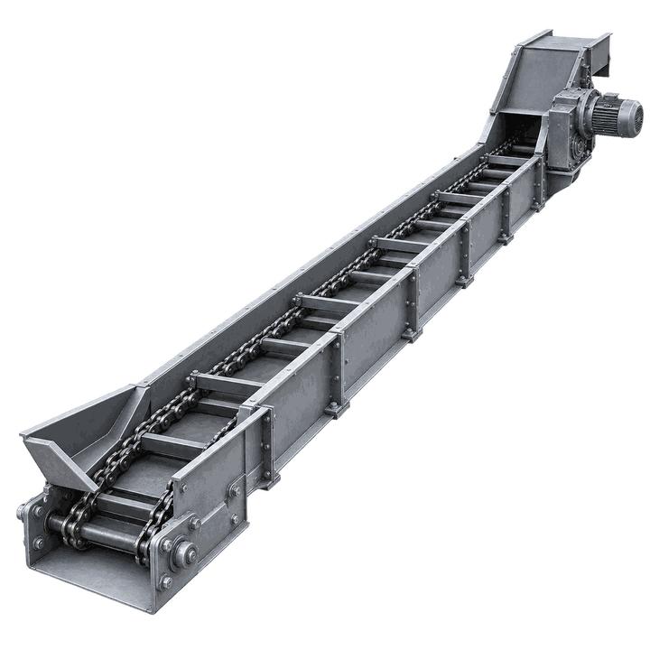
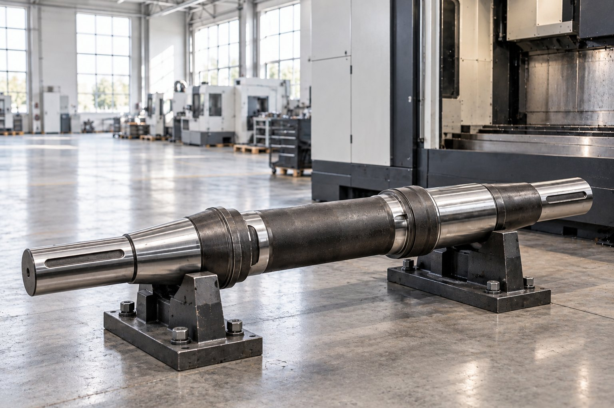
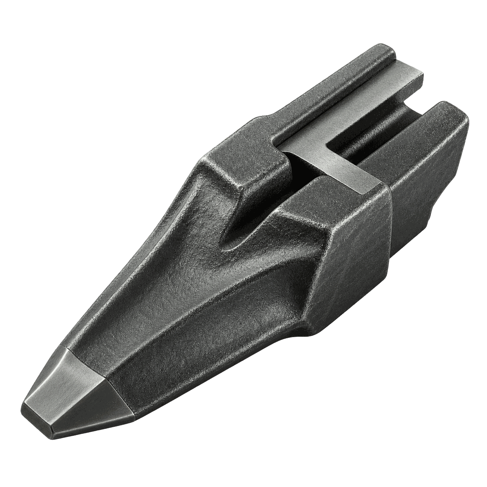
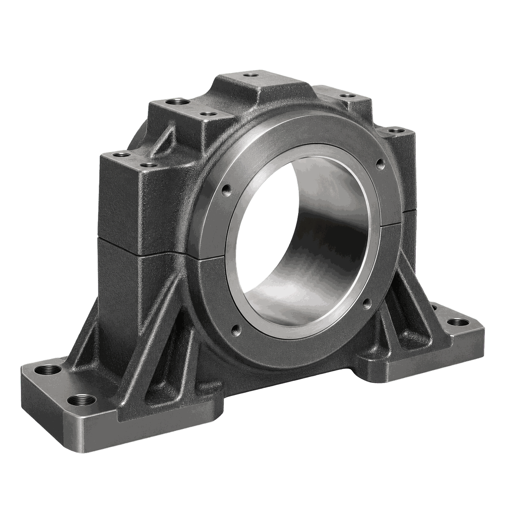
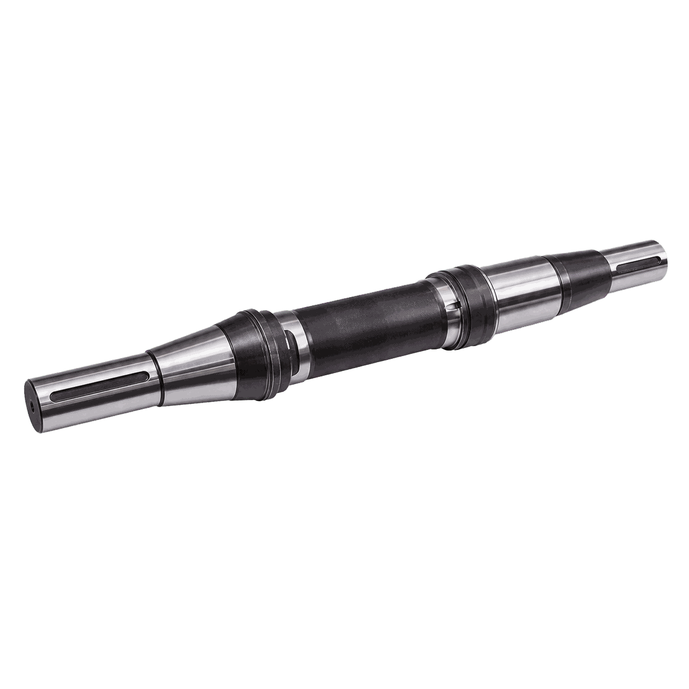
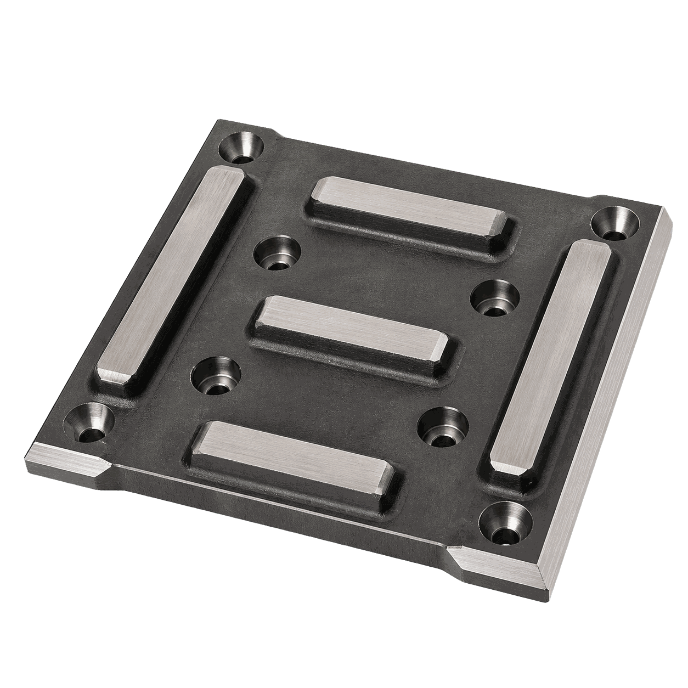
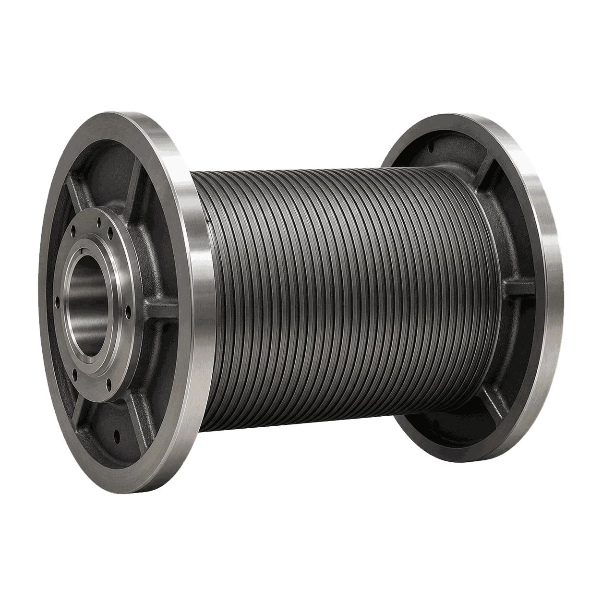
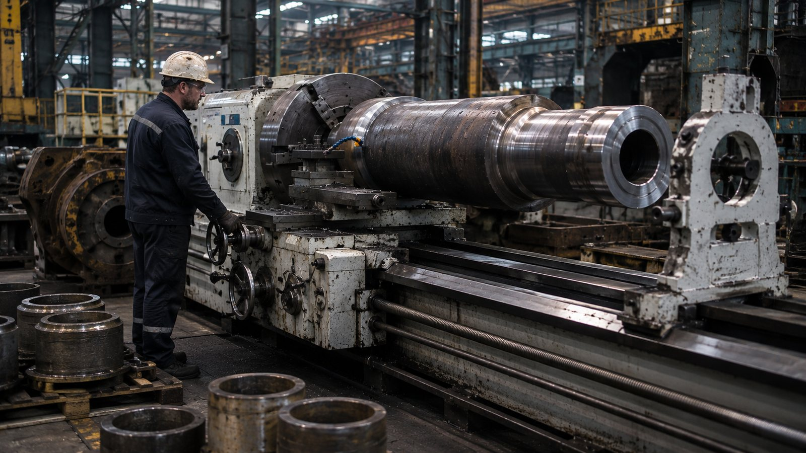
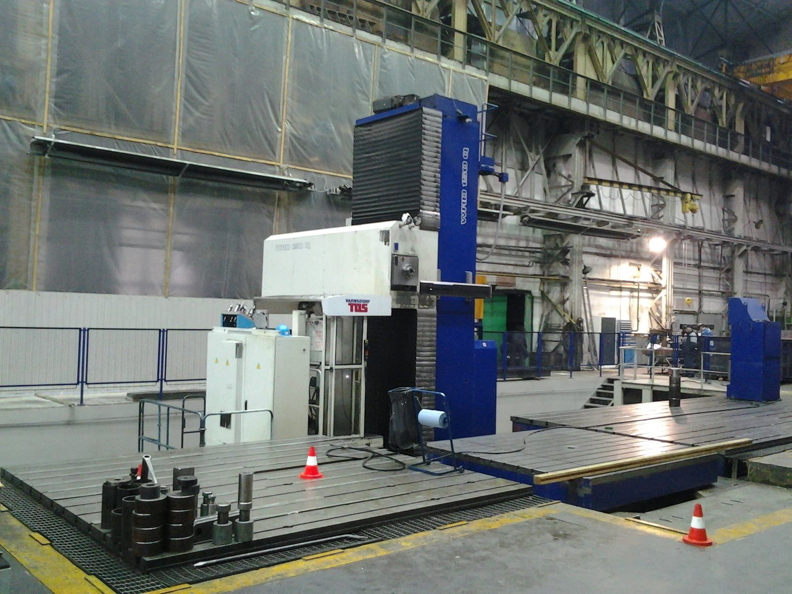
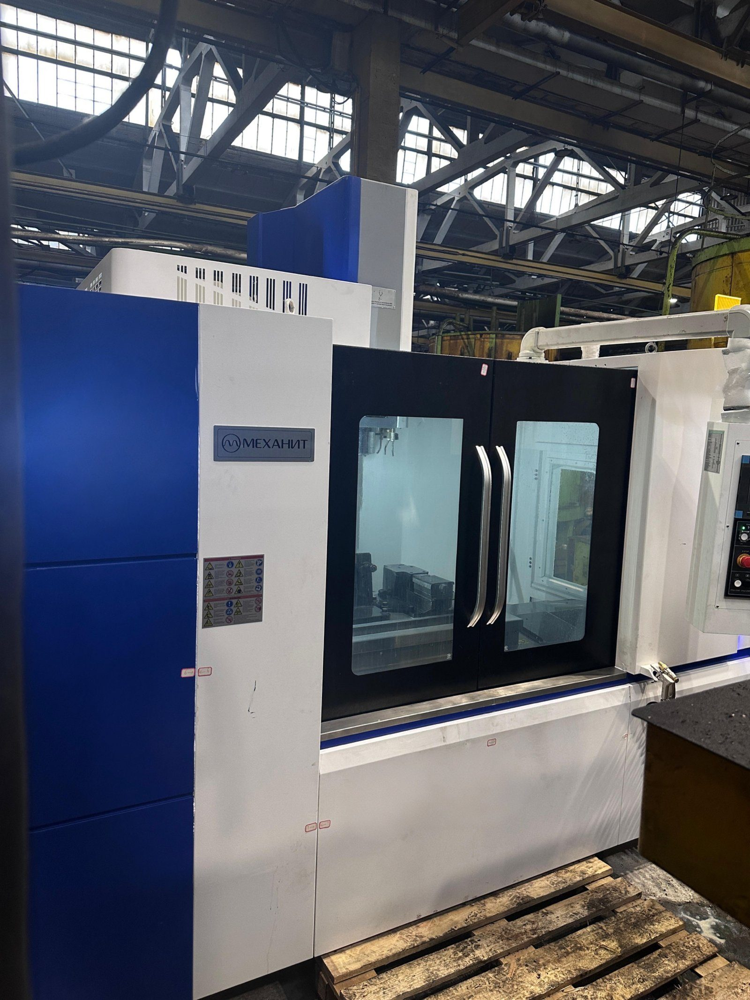

Скребковый перегружатель
Технологическая задача
Построить маршрут обработки детали «Скребковый перегружатель» с понятным разделением операций и подбором оборудования под каждую операцию.

Решения для тяжёлых и износостойких деталей горнорудного оборудования: корпуса, валы, плиты, барабаны и элементы перегрузки.

Построить маршрут обработки детали «Скребковый перегружатель» с понятным разделением операций и подбором оборудования под каждую операцию.

Обеспечить точность базовых плоскостей, посадочных отверстий и сопрягаемых поверхностей детали «Корпус буровых коронок».

Обеспечить точность базовых плоскостей, посадочных отверстий и сопрягаемых поверхностей детали «Корпус подшипникового узла».

Обеспечить соосность шеек, стабильную геометрию детали «Приводной вал» и чистоту рабочих поверхностей.

Сформировать базовые плоскости, контуры и отверстия детали «Футеровочная плита» без потери геометрии на крупной заготовке.

Построить маршрут обработки детали «Барабан лебёдки» с понятным разделением операций и подбором оборудования под каждую операцию.
Реальные запуски оборудования на производствах: что поставили, как вводили в эксплуатацию, что получил заказчик.

Внедрения · 15.07.2026LB-B500×1500 для ремонта и изготовления деталей горнодобывающего оборудованияЧитать →
Внедрения · 04.03.2026Ввод горизонтально-расточного станка в эксплуатацию: ключевые проверкиЧитать →
Внедрения · 22.06.2026Запуск горизонтально-фрезерного центра: от поставки до первой деталиЧитать →Как проходит проект от чертежа до серии — шесть шагов. Нужен участок целиком — комплексное оснащение.